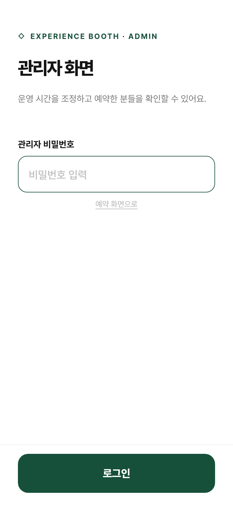
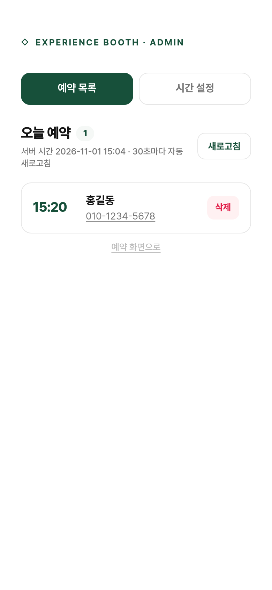
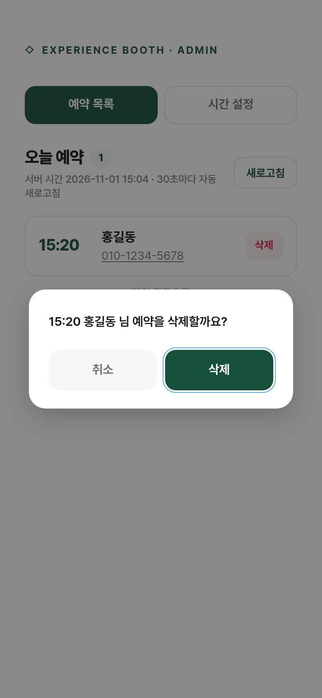
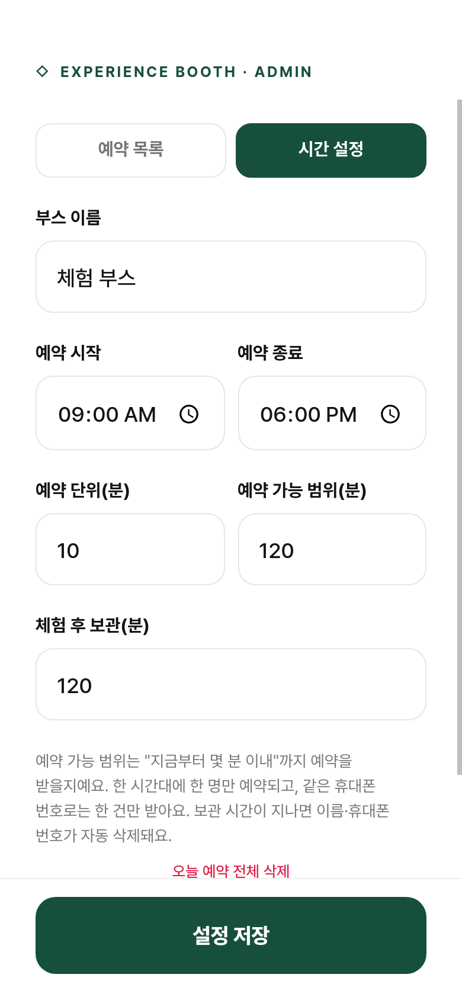
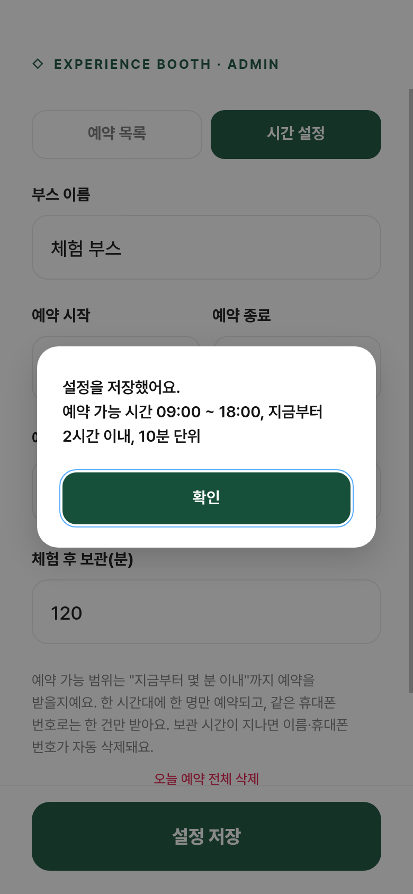

이 사이트는 행사장 체험 부스 예약을 받는 한 페이지 웹사이트입니다. 방문객은 이름과 휴대폰 번호를 남기고 10분 단위 시간을 골라 예약하고, 담당자는 관리자 화면에서 운영 시간을 조정하고 예약자를 확인합니다.
위 값은 모두 관리자 화면의 "시간 설정"에서 바꿀 수 있습니다.
| 구분 | 주소 |
|---|---|
| 방문객 예약 화면 | https://dev.daonlabs.kr/r/5501/ |
| 관리자 화면 | https://dev.daonlabs.kr/r/5501/#admin |

#admin을 붙여 접속합니다. 예약 화면 맨 아래의 작은 관리자 링크를 눌러도 됩니다.ADMIN_KEY 환경변수로 정합니다. 기본값은 miso1234이며, 행사 전에 반드시 바꿔 주세요.비밀번호가 틀리면 "관리자 비밀번호가 올바르지 않습니다" 안내가 뜹니다. 서버에서 비밀번호를 바꾸면 열려 있던 관리자 화면은 자동으로 로그아웃됩니다.

부스 앞 태블릿이나 휴대폰에 이 화면을 열어 두면 다음 손님을 한눈에 볼 수 있습니다. 예약 시간 5분 전쯤 번호를 눌러 "곧 순서입니다"라고 안내하면 노쇼가 줄어듭니다.
예약이 완료되면 손님의 휴대폰으로 확인 문자(LMS)가 자동 발송됩니다. 예약 목록의 번호 옆에 발송 상태가 표시되고, 목록 상단에 문자 기능이 켜져 있는지 보입니다.
| 표시 | 뜻 |
|---|---|
| 문자 전송 | 정상 발송됨 |
| 문자 실패 | 발송 실패. 문자 재전송 버튼으로 다시 보낼 수 있습니다. 예약은 유지됩니다. |
| 문자 없음 | 문자 기능이 꺼져 있음. 서버의 .env 에 비즈고 API Key 와 발신번호가 없을 때입니다. |
[체험 부스] 예약되었습니다. ■ 예약 시간 : 11월 3일 15:20 ■ 예약자 : 홍길동 예약 시간에 맞춰 부스로 와주세요. 늦으시면 다음 분께 순서가 넘어갈 수 있어요. 체험 전에 담당자가 연락드릴 수 있어요. 입력하신 이름과 휴대폰 번호는 체험 후 2시간 뒤 자동 삭제됩니다.

삭제하면 다음과 같이 바뀝니다.


설정은 서버에 저장되어 서버를 재시작해도 유지됩니다. 방문객 화면의 시간 목록은 30초 안에 새 설정을 따릅니다.
| 항목 | 기본값 | 설명 |
|---|---|---|
| 부스 이름 | 체험 부스 | 예약 화면 제목에 "OO 예약"으로 표시됩니다. |
| 예약 시작 | 09:00 | 이 시각부터 예약 슬롯이 생깁니다. |
| 예약 종료 | 18:00 | 이 시각 전에 시작하는 슬롯까지 받습니다. 18:00이면 마지막 슬롯은 17:50입니다. |
| 예약 단위(분) | 10 | 슬롯 간격입니다. 5~120분. |
| 예약 가능 범위(분) | 120 | "지금부터 몇 분 이내"까지 예약을 받을지입니다. 10~720분. |
| 체험 후 보관(분) | 120 | 예약 시간이 지나고 몇 분 뒤 이름·번호를 자동 삭제할지입니다. 0~1440분. |
예약 가능 범위를 10분으로 줄이면 사실상 새 예약이 들어오지 않습니다. 다시 받을 때 120분으로 되돌립니다. 이미 잡힌 예약은 그대로 유지됩니다.
예약 종료를 예를 들어 17:00으로 바꿉니다. 이미 잡힌 17:00 이후 예약은 목록에 남으니, 번호를 눌러 연락한 뒤 삭제합니다.
예약 단위를 15분이나 20분으로 바꿉니다. 새 슬롯은 바뀐 간격으로 생기고, 이미 잡힌 예약은 그대로 유지됩니다.
예약 가능 범위를 180분이나 240분으로 늘립니다. 다만 범위가 길수록 노쇼가 늘어날 수 있어 2시간을 권장합니다.
전날 예약은 보관 시간이 지나 이미 지워져 있습니다. 설정은 유지되므로 그대로 운영하면 됩니다. 비밀번호나 부스 이름을 바꿨다면 이 때 확인하세요.
예약 시간이 지나고 "체험 후 보관(분)"이 지나면 서버가 이름과 휴대폰 번호를 자동으로 지웁니다. 별도 조작은 필요 없습니다. 방문객 화면에도 같은 내용이 안내되어 있습니다.
시간 설정 탭 맨 아래의 오늘 예약 전체 삭제는 모든 예약을 한 번에 지웁니다. 확인 창에서 전체 삭제를 누르면 실행됩니다.
서버 담당자용 내용입니다. 부스 담당자는 건너뛰어도 됩니다.
# 실행 (관리자 비밀번호 지정) ADMIN_KEY=새비밀번호 ./start.sh # 중지 kill $(cat logs/server.pid) # 로그 확인 tail -f logs/server.log
Bizgo_KEY=비즈고 콘솔(연동관리)에서 발급한 통합 API Key BIZGO_FROM=비즈고에 사전 등록된 발신번호 (숫자만) # SMS_ENABLED=false # 문자 끄기
비즈고 콘솔의 연동관리에서 서버 공인 IP(61.81.223.66)를 허용 목록에 등록해야 합니다. 설정을 바꾸면 서버를 재시작하세요.
data/db.json 한 파일에 저장됩니다. 백업은 이 파일만 복사하면 됩니다.data/db.json을 지운 뒤 다시 실행하면 기본 설정으로 초기화됩니다.모든 시간 계산은 한국 표준시(KST) 기준이며, 서버의 시간대 설정이나 방문객 기기의 시간과 무관하게 동작합니다.
| 증상 | 확인할 것 |
|---|---|
| 방문객 화면에 시간 목록이 비어 있음 | 예약 종료 시각이 지났거나, 예약 시작 시각까지 "예약 가능 범위"보다 많이 남은 경우입니다. 시간 설정의 시작·종료 시각과 범위를 확인하세요. |
| 손님이 "이 번호로 이미 예약이 있어요"라고 함 | 같은 번호로 한 건만 받습니다. 예약 목록에서 그 번호를 찾아 시간을 알려주거나, 시간을 바꾸려면 기존 건을 삭제한 뒤 다시 예약하게 안내하세요. |
| 손님이 고른 시간이 "방금 다른 분이 예약한 시간"이라고 나옴 | 거의 동시에 다른 손님이 먼저 예약한 경우입니다. 목록이 자동으로 새로 고쳐지니 다른 시간을 고르게 안내하세요. |
| 관리자 화면이 갑자기 로그인 화면으로 돌아감 | 서버에서 비밀번호가 바뀌었거나 서버가 재시작된 경우입니다. 다시 로그인하세요. |
| 설정 저장이 안 됨 | 안내 문구를 확인하세요. 종료 시각이 시작보다 이르거나, 숫자 범위를 벗어난 경우 저장되지 않습니다. |
| 예약 목록에 "문자 실패"가 뜸 | 표시를 길게 누르면 이유가 보입니다. A401·A100은 API Key 오류, A327은 미등록 발신번호, 50009는 IP 미허용입니다. 서버 담당자에게 .env 와 비즈고 콘솔 설정을 확인해 달라고 하세요. 원인을 고친 뒤 문자 재전송을 누릅니다. |
| 화면이 전혀 열리지 않음 | 서버가 꺼져 있을 수 있습니다. 서버 담당자에게 8장의 실행 명령으로 다시 띄워 달라고 요청하세요. |